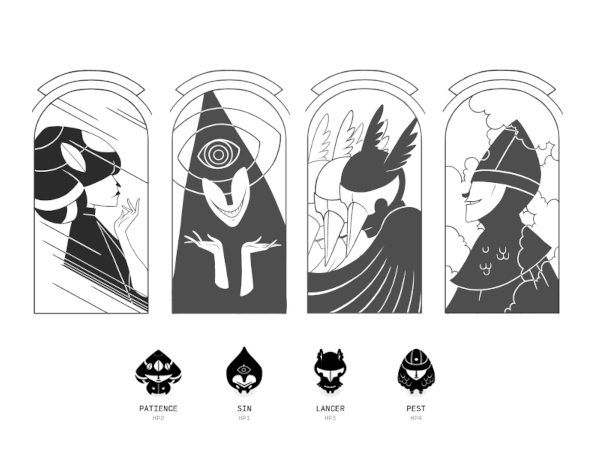
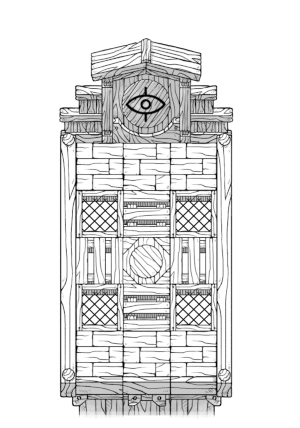
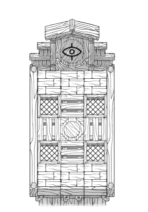
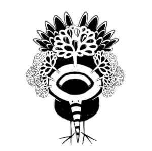
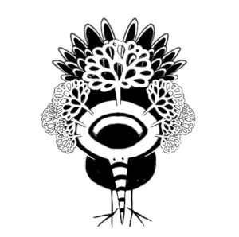

About
About Projects
Projects Books
Books Games
Games Stories
Stories Store
Store Collection
Collection Notes
NotesMarkl is an unreleased game in which players must program their characters fighting style, to face various opponents in a battle happening too fast for humans to compete. All characters are blind.
I worked on this game with devine(design/ programming).
 We won't be finishing this game, ever. We realized we did not much like the idea of making a fighting game after all. I gathered some of the visuals here on this page because I'm very pleased with what I did!
We won't be finishing this game, ever. We realized we did not much like the idea of making a fighting game after all. I gathered some of the visuals here on this page because I'm very pleased with what I did!
 The four fighter characters are named Lancer(Lancer), Patience(Mage), Sin(Assassin) and Pest(Berzerker). Each character had a walk, dash, attack, hurt and death animation.
The four fighter characters are named Lancer(Lancer), Patience(Mage), Sin(Assassin) and Pest(Berzerker). Each character had a walk, dash, attack, hurt and death animation.
Character stats:
Lancer: health 6, range 2, speed 1
Patience: health 2, range 4, speed 4
Sin: health 1, range 1, speed 8
Pest: health 3, range 1, speed 5
See the full spritesheets for all the animations:
Patience
Sin
Pest
Lancer
{kind=link}
{kind=link}
{kind=link}
{kind=link}
I also designed a goat-like NPC that would show up if the game ran for too long. It would run around the stage at random, killing whoever it touches first, thusly ending the game.
This was the character selection screen.
 The level selection screen was focused on 'sections' of a tower. The idea was that you had to beat each level, working your way to the top. Each section was themed. From top to bottom was The Garden, The Dungeon, The Dojo, The Attic, and The Roof.
The level selection screen was focused on 'sections' of a tower. The idea was that you had to beat each level, working your way to the top. Each section was themed. From top to bottom was The Garden, The Dungeon, The Dojo, The Attic, and The Roof.
 Each section had its own set of separate tiles, which we could re-arrange to create new floor patterns to make new levels.
Each section had its own set of separate tiles, which we could re-arrange to create new floor patterns to make new levels.
There were about 8-10 unique floor tiles, and 7-8 walls per theme.
 

For example, we could make rooms that were 5x5, 3x5 and 5x3.
Some promo art of the characters. I made a short run of stickers with these!

 We tried to revive this game a few times, with little success. The last attempt was an exploration game (that re-used a lot of the same tiles). I designed 4 deities for the game. The goal was to meet with these deities to acquire abilities(that would permit you to move differently).
We tried to revive this game a few times, with little success. The last attempt was an exploration game (that re-used a lot of the same tiles). I designed 4 deities for the game. The goal was to meet with these deities to acquire abilities(that would permit you to move differently).
The four deities were Akro, Alaria, Favo and Rama.

 
